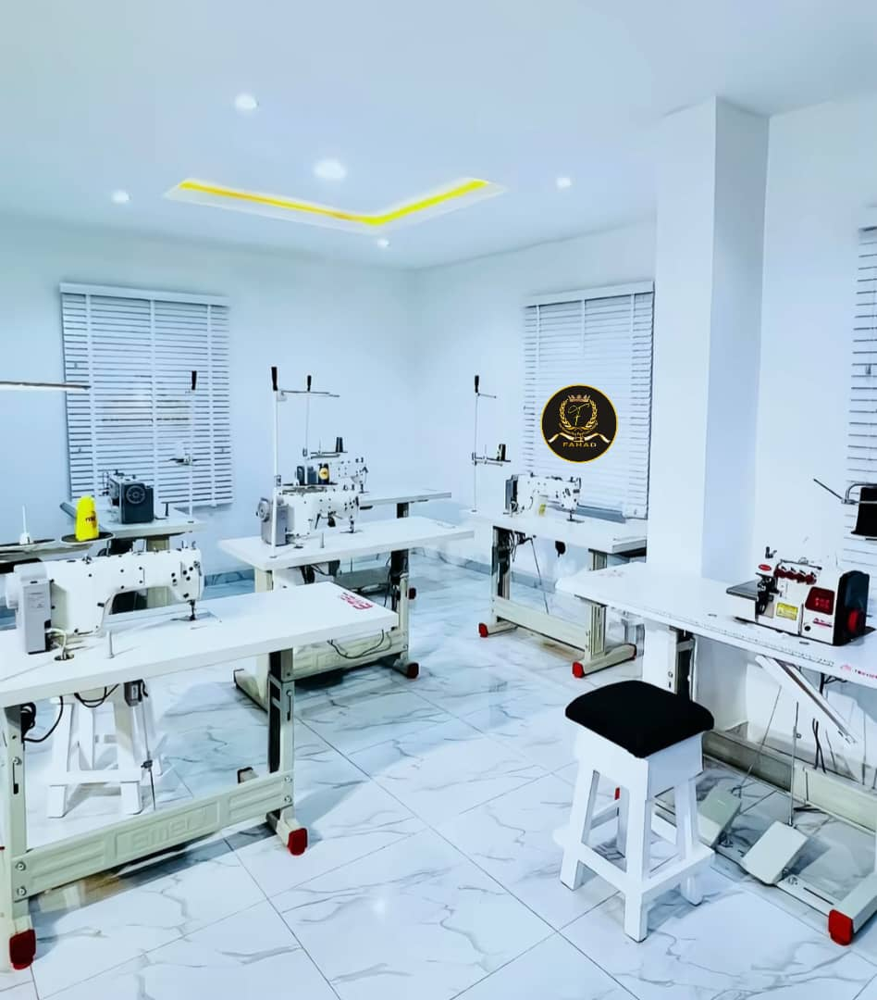

L'élégance taillée à votre mesure
Sarkin Wanka Fashion Design sublime votre allure avec des coupes parfaites et des finitions soignées, de la tenue traditionnelle à la pièce moderne.


Explorez la collection
Des tenues pour homme et femme, des modèles prestige, des tissus de qualité et des jeans.



Un atelier où le tissu rencontre l'imagination
Fondée par la passion de l'excellence et du détail, Sarkin Wanka Fashion Design est bien plus qu'un atelier de couture : un lieu où naissent des pièces uniques qui racontent une histoire.
Notre mission est de sublimer votre élégance à travers des coupes parfaites et des finitions soignées.
- Confection 100 % sur mesure
- Travail sur vos tissus ou conseil sur le métrage
- Mesures à distance par appel vidéo possibles
Votre tenue en 4 étapes
Choisissez
Parcourez la galerie et choisissez un modèle, ou apportez votre idée.
Mesures
Prises à l'atelier ou à distance avec notre guide ou un appel vidéo.
Confection
Coupe et finitions soignées, en général sous 1 à 2 semaines.
Livraison
Récupérez à l'atelier ou recevez à Niamey et dans la sous-région.
Prêt à créer votre prochaine tenue ?
Écrivez-nous sur WhatsApp, nous vous répondons avec plaisir.
Discuter sur WhatsApp